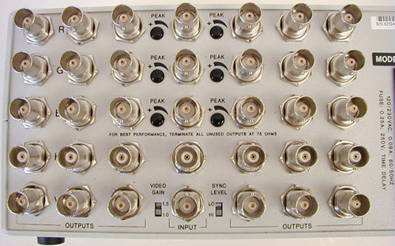
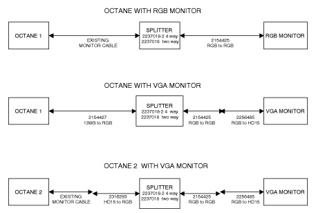

Operating Documentation
Direction 5134894-800, Rev# 9
GOC4 Upgrade Installation & Service Information
Operating Documentation |
Run all option cables that connect to the Table, Gantry or Console.
For example the remote monitor (through the splitter) and SmartScore.
Illustration 1: Remote Monitor Splitter

Illustration 2 shows the only approved GE CT configuration for remote monitors, including the part numbers for the only approved components. The use of other configurations and/or components should be strictly avoided.
Illustration 2: Video Splitter / Monitor Cabling

| NOTE: | For the pdf version of the Video Splitter / Monitor Cabling, click on the pdf icon below. |
Media File 1: Video Splitter / Monitor Cabling

Illustration 3 shows the non-GRE configuration for remote monitors.
Illustration 3: Non-GRE Video Splitter / Monitor Cabling

| NOTE: | For the pdf version of the Non-GRE Video Splitter / Monitor Cabling, click the pdf icon below. |
Media File 2: Non-GRE Video Splitter / Monitor Cabling